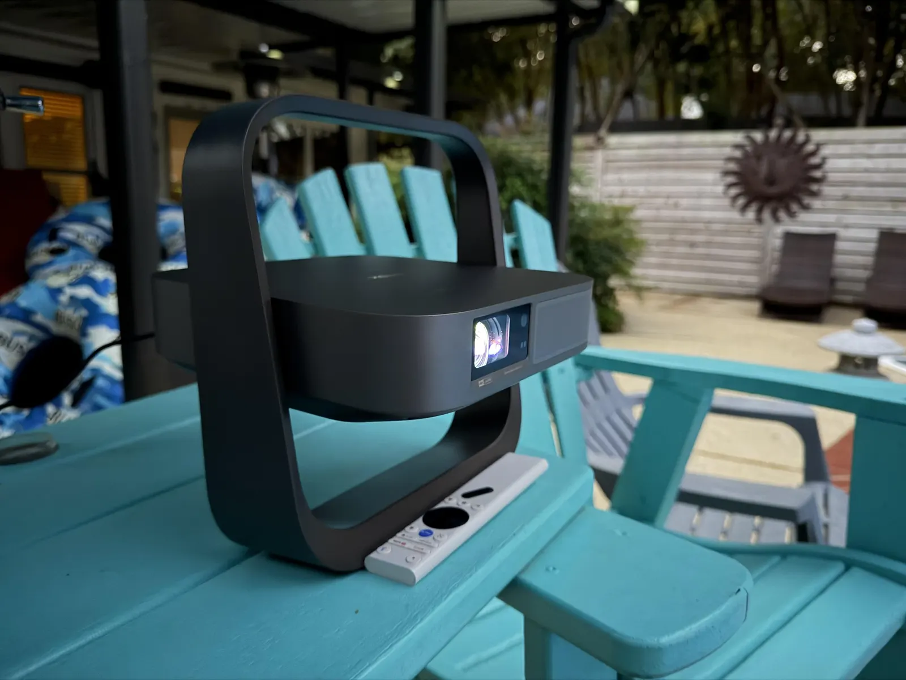
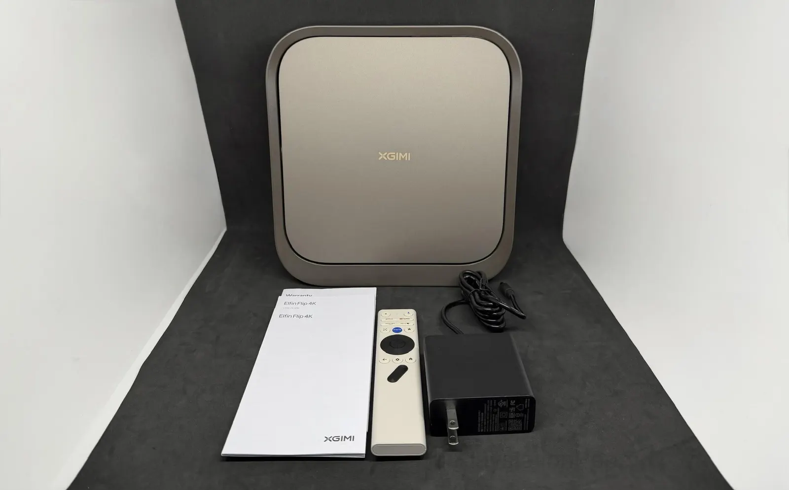
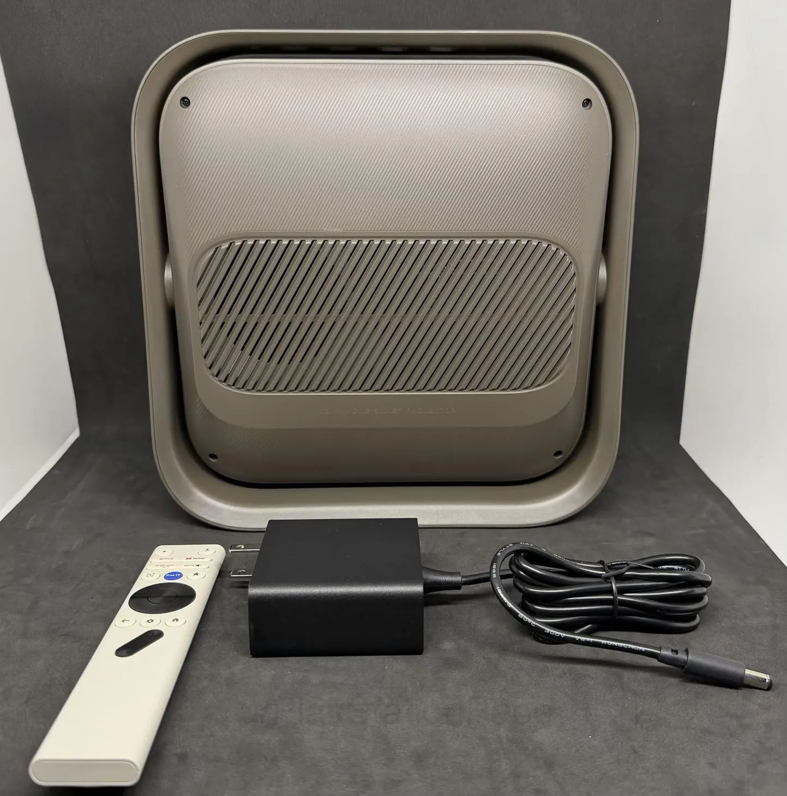
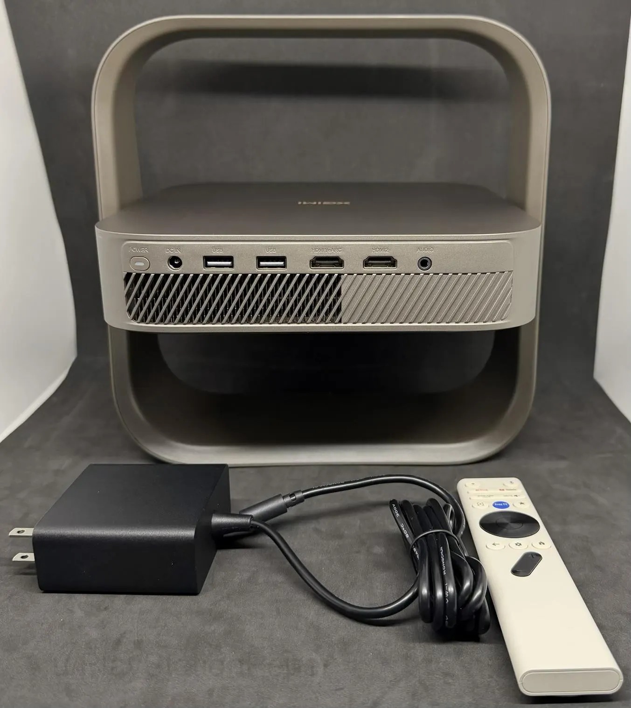
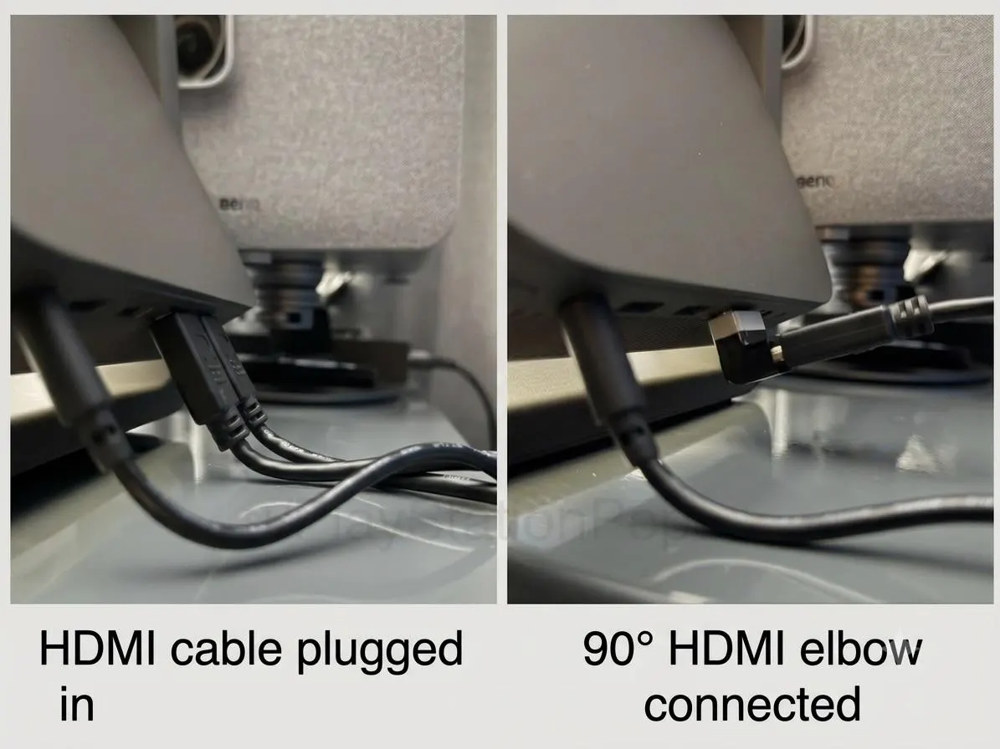

Projector Review
XGIMI Elfin Flip 4K Laser Projector Review
Disclosure: As an XGIMI Partner Affiliate, I earn from qualifying purchases.

Hi everyone! I am thrilled to share my review of the XGIMI Elfin Flip 4K Laser Projector.
I want to express my sincere thanks to XGIMI for sending me this unit for a community review. As always, my feedback and testing results are completely my own.
Let’s dive into its features, capabilities, and overall performance!
Where to buy
Key specs
- Resolution: native 4K UHD
- Light source: RGB triple laser
- Brightness: 1,600 ISO lumens
- Color: up to 110% of the BT.2020 color space
- Contrast: 20,000:1 dynamic contrast ratio, HDR10 and HLG support
- Zoom: 0.98x to 1.3x motorized optical zoom, 40 to 200 inch image
- Weight: roughly 3.4 lbs (1.55 kg)
- Stand: built in flip stand with up to 150 degrees of tilt, tripod thread on the bottom
- Speakers: 7W Harman Kardon, Dolby Audio and DTS Virtual:X
- Ports: 2 HDMI (one with eARC), 2 USB, 3.5mm audio jack
- Smart platform: Google TV with built in Google Cast
- Gaming: ALLM and VRR support, sub-1ms Game Mode at 1080p 120Hz
- Battery: none, runs on AC power
Unboxing & First Impressions
The packaging is minimal and sturdy. Everything is packed securely and neatly in the box without excessive waste.
Inside the box, you will find:
- The XGIMI Elfin Flip 4K Laser
- Compact power supply and cable
- Backlit Bluetooth remote control
- Two AAA batteries for the remote
- Quick start manual and warranty paperwork
Design and Build Quality
The first thing that struck me was the form factor. At roughly 3.4 lbs (1.55 kg), it feels as light and portable as a small laptop. The matte finish looks sleek and modern, and it does a great job keeping fingerprints away.
The built in stand design is fantastic. When closed, the stand wraps around the body like a frame, protecting the lens during transport or storage. Flipping it open gives you up to 150 degrees of tilt adjustment, making ceiling projection effortless without needing an extra tripod. Best of all, the stand holds its angle under its own tension and does not slip down, so your framing stays locked in place. If you do need a higher setup, there is also a standard tripod thread on the bottom.


Portability and Connections
On the back panel, XGIMI included a solid port selection:
- Two HDMI ports (including one with eARC support for external soundbars or receivers)
- Two USB ports
- 3.5mm headphone audio jack
- Power input port
One practical thing to keep in mind is port placement. Depending on how large or thick your HDMI cable is, it can stick out and restrict the projector from tilting straight up at the ceiling. I highly recommend using a 90 degree angle HDMI adapter so your cables stay out of the way when adjusting the angle.
The remote control is comfortably sized, lightweight, and features dedicated shortcut buttons alongside responsive backlighting for dark room navigation.


Initial Setup Experience
Plugging in the projector, flipping open the stand, and aiming it at your wall makes setup much easier compared to standard boxy units.
It features motorized optical zoom and automatic keystone correction, which makes fitting the image onto a screen quick and painless. On first boot, you are greeted with the standard Google TV setup, which lets you configure settings right from your phone or manually.
As for noise, the fan stays pretty quiet during normal viewing, though you will hear it kick up a bit if you crank the laser power up to maximum.
Picture Quality and Laser Performance
The Elfin Flip 4K uses an RGB triple laser light source paired with native 4K UHD resolution. The picture sharpness and color output are impressive right out of the box.
- Brightness (1,600 ISO Lumens): For a compact unit, 1,600 ISO Lumens provides enough punch to handle ambient light in dim or shaded rooms. In a fully darkened room, the image looks remarkably bright and vivid.
- Color Accuracy and Gamut: Thanks to the RGB triple laser engine, it covers up to 110% of the BT.2020 color space. Colors look rich and natural in Movie mode, while options like White Balance and Color Space allow for extra fine tuning.
- Image Size & Motorized Optical Zoom: The 0.98x to 1.3x motorized optical zoom allows you to resize the display from 40 up to 200 inches without losing 4K pixel resolution. While it can project up to 200 inches, I found that it looks particularly fantastic at 120 inches, and holds up wonderfully all the way up to 150 inches while maintaining great brightness and detail.
- Contrast, Dynamic Range & Shadow Detail: It features a 20,000:1 dynamic contrast ratio along with support for HDR10 and HLG. I watch a wide variety of content, including dark, moody movies where shadow detail is critical. Thanks to the dynamic black level enhancement, the projector was able to keep up remarkably well with the content I was viewing, preserving subtle details in dark scenes without washing out the rest of the image.
- Rainbow Effect and Motion: Motion handling is smooth and clean. However, it is worth noting that a subtle rainbow effect (color breakup) can be noticeable during high contrast or exceptionally bright scenes, particularly when running the projector at full laser power output.
Audio & Sound Performance
The projector comes equipped with a built in 7W Harman Kardon speaker system supporting Dolby Audio and DTS Virtual:X. While the onboard speakers do a great job filling a bedroom with clear vocal dialogue for quick viewing, I personally route everything through an AVR (Audio Video Receiver) for a full home theater setup.
- AVR Setup & eARC Performance: Connecting the projector directly to my AVR via the HDMI eARC port allowed me to pass high quality surround formats straight through to my speaker setup. Audio switching was seamless, giving me full multi channel sound for movies and games.
- Built in Harman Kardon Speakers: If you use the built in speakers on the go or in a temporary setup, speech clarity is crisp and clean without distortion at higher volumes.
- Low End Bass: Compact built in speakers naturally have limited lower frequency bass response. Utilizing an AVR or dedicated external sound system completely solves this, giving action scenes and music the full weight and punch they deserve.
Gaming Performance & Smart OS
Gaming Performance
To put its gaming capabilities through their paces, I tested the Elfin Flip 4K across three generations of PlayStation hardware: the PS3, PS4, and PS5.
- PlayStation 5 Experience: On current gen hardware, setting the projector to Game Mode drops latency to sub-1ms levels at 1080p @ 120Hz. Playing fast paced PS5 titles feels ultra responsive, smooth, and input lag is practically unnoticeable. Even when running in native 4K at 60Hz, the controls remain responsive and precise.
- PlayStation 3 & 4 Legacy Gaming: Connecting older systems like the PS3 and PS4 works effortlessly via HDMI. Legacy 720p and 1080p titles upscale cleanly onto the big screen without feeling sluggish.
- Built in Gaming Suite: The projector includes ALLM (Auto Low Latency Mode), VRR (Variable Refresh Rate) support, a virtual crosshair overlay, dynamic black level enhancement, and shadow boosting to help reveal details in dark in game environments.
Smart OS (Google TV)
- Native Streaming: Powered by Google TV, navigation is fast and intuitive once everything is running. Popular apps like Netflix, Prime Video, Disney+, and YouTube run natively directly on the projector without needing streaming dongles.
One thing to note is that navigation felt a bit slow during initial setup. Because you have to download and install your apps right at the beginning, it takes some time for everything to finish updating, but once that process is complete, the OS runs smooth and snappy.
- Casting and Connectivity: Casting is enhanced by built in Google Cast, which simplifies mirroring photos or videos straight from your phone or Chrome browser.
- AirPlay Support: It is worth noting that Apple AirPlay is not natively built into the projector. Apple users will need to use third party receiver apps (like AirScreen or MagiCast through XGIMI's Projection Assistant) or rely on Chromecast compatible iOS apps to cast content from an iPhone, iPad, or Mac.
Pros & Cons
Pros:
- Outstanding 4K sharpness and vibrant color performance from the triple RGB laser engine.
- Dynamic black level enhancement keeps up with diverse content and preserves critical shadow detail in dark movies.
- Built in 150 degree swivel stand makes positioning and ceiling projection effortless without a tripod.
- Motorized optical zoom (0.98x to 1.3x) lets you resize the image without losing 4K resolution.
- Handles 120 inch to 150 inch screen sizes exceptionally well in dim to dark room environments.
- Low input latency with sub-1ms response times, 120Hz refresh rate at 1080p, VRR, and ALLM for gaming.
- Native Google TV with official support for Netflix, Prime Video, and Disney+.
- Quiet fan noise during standard viewing.
- Robust build quality with a strong tension hinge stand and a standard tripod thread on the bottom.
Cons:
- No internal battery (requires continuous AC power supply).
- Rear port placement can restrict full vertical tilt when using thick HDMI cables (90 degree adapter recommended).
- Minor rainbow effect visible in high contrast scenes at maximum laser power.
- No native Apple AirPlay support (requires third party apps or Chromecast compatible apps).
- Initial Google TV setup feels slow while apps update in the background, though it smooths out afterwards.
Who's This For?
- Casual Movie Lovers & Binge Watchers: Anyone who watches a variety of content and wants a big screen experience (120 to 150 inches) with great shadow detail in a bedroom, living room, or apartment.
- Console Gamers: Gamers playing on PS3, PS4, or PS5 who want ultra low latency, 120Hz refresh rates, and dedicated gaming enhancements on a massive display.
- Ceiling Projector Enthusiasts: Anyone who loves projecting onto the ceiling for cozy bedtime viewing, thanks to the flexible 150 degree swivel stand.
- Home Theater Enthusiasts with an AVR: Users who plan to pair the projector with an external audio video receiver and surround speakers via eARC for true cinematic sound.
Final Verdict
The XGIMI Elfin Flip 4K strikes an impressive balance between high end laser performance and grab and go convenience. Its built in swivel stand design makes setting up anywhere in your home a breeze, while the motorized optical zoom, automatic keystone, and low latency gaming support across multiple PlayStation console generations elevate it far beyond standard portable units.
While the lack of an internal battery means it is not completely off grid capable, and Apple users will need to work around the lack of native AirPlay, I would highly recommend this projector to anyone looking for an easy to set up, compact 4K experience in any environment. Its vibrant 4K picture, dynamic black level handling across varied content, seamless Google TV integration, and overall versatility make it a standout choice for home entertainment.
Where to buy
Disclosure: As an XGIMI Partner Affiliate, I earn from qualifying purchases.
For more info or questions about this projector, or help picking one for your room, book a consultation or contact me and I'd be happy to offer some suggestions.
This review was first posted in r/BudgetProjectors.